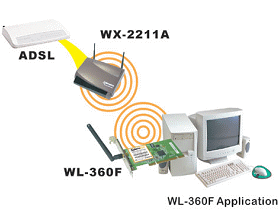
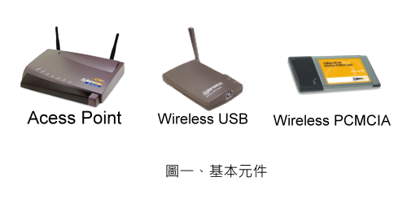
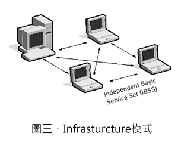
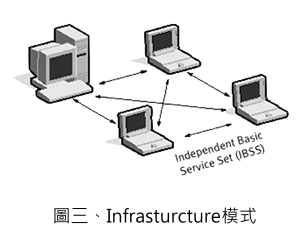
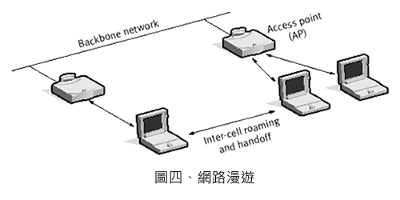

何謂「無線網路」？
簡單來講，無線區域網路(Wireless Local Area Network ; WLAN)，係用戶端設備(CPE)透過無線網路卡(Wireless Card )，以類似radio方式，連結Access Point(AP)使用網路資源。其實，無線區域網路概念與傳統的有線網路並無不同，只是將有形的連接轉換成無形的連接（如下圖）。

組成元件
架構無線網路環境，一般都是由Access Point 與無線網路卡兩者所組成 ，前者像是LAN上集線器(HUB)的功能，做為中介角色，將訊號正確傳遞到目的端。後者是裝在用戶端設備(電腦，PDA)上，與AP或無線網路卡連結傳遞資料，類似10/100網路卡功能。

無線架構
如果是兩台CPE間以點對點方式互相傳遞資料，只需無線網路卡即可，不需透過AP來轉送，此架構稱為Add Hoc模式(圖二)，比較屬於個人使用環境。如果要能連上網際網路或區域網路，必須要增加AP設備，與無線網路卡形成基本網路環境，此架構稱為Infrastructure模式(圖三)，常見於企業與學校等無線網路。
 

網路漫遊
無線網路優勢之一，訊號涵蓋範圍內任意移動，不受地形限制，仍能連結網際網路。在整個無線網路環境必須要有「漫遊」機制(圖四)存在，此機制與GSM手機具有相同之處。例如，你 原先在辦公室透過AP連結到網路上，當你移動到另一棟建築物時，連結訊號並不會無法連結到原先AP而斷線，而是自動在所在位置找到適當的AP來連結網路。

無線個人網
無線個人網（WPAN）是在小範圍內相互連接數個裝置所形成的無線網路，通常是個人可及的範圍內。例如藍牙連接耳機及膝上電腦，ZigBee也提供了無線個人網的應用平台
無線區域網
無線區域網路（WLAN）類似其他無線裝置，利用無線電而非電纜在同一個網路上傳送資料，是IEEE 802.11系列標準。
無線城域網
無線城域網是連接數個無線區域網的無線網路型式。(WiMAX)